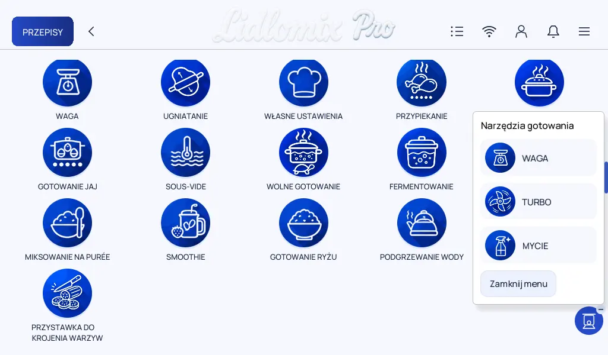

03 / Equipment tests ·
From a file to cooking
The second step in the Advent chocolate slice recipe is to weigh the almonds. I wanted one screen to show how much to add and how much was already in the bowl.
Open recipe

From the card I can go through the recipe. In this example, the second step is weighing almonds.
Weighting in the course of a recipe

During a weighing step, Lidlomix Pro shows the reading from the Connect’s sensor beside the recipe target. On my unit the reading changes in 5 g steps. Tare resets the reading before you add the next ingredient. I also tested speed, temperature, the countdown and interval operation on the device. Compatible recipe steps can now control the robot.
Floating button

I have three shortcuts at hand: Weight, Turbo and Washing.
Why the recipe got its own format
I could read a Word file, but I still had to enter the time, speed and blade direction by hand. A JSON file stores those settings for each step. After importing and choosing Adapt recipe, the app can show a kneading step with its time already set, for example.
I also tried opening ChatGPT in the Connect’s browser. The browser ran slowly on that hardware, so I moved recipe preparation to the phone. I save a file from the assistant and the mobile app sends it to the robot over the local Wi-Fi network. That is the workflow I’m now testing in everyday use.